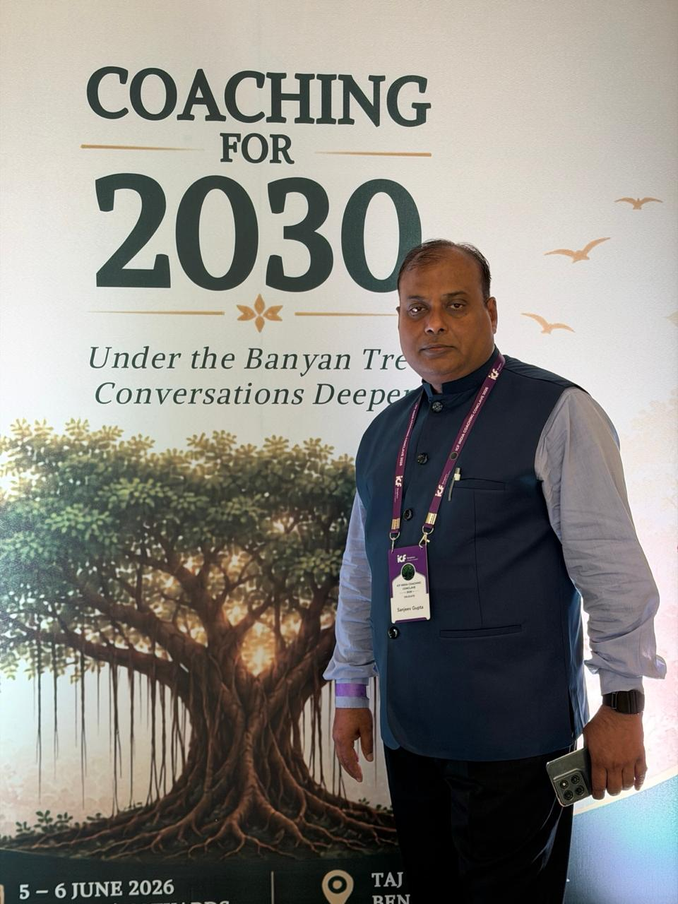

Professional Story
From Leading to Enabling
For more than three decades, I worked in leadership roles across operations, strategy and complex global environments.
My journey involved many of the realities leaders face every day — delivering results, leading large and distributed teams, managing customers and stakeholders, developing people, dealing with cost pressures and navigating organisational change.
Today, I bring that experience into conversations built around listening, curiosity and a safe space without judgement.
C-DOT
Bharti Airtel
Ericsson
ICF Delhi NCR Chapter

ICF India Coaching Conclave • Bangalore
"Coaching for 2030" — Active participant & ICF community leader